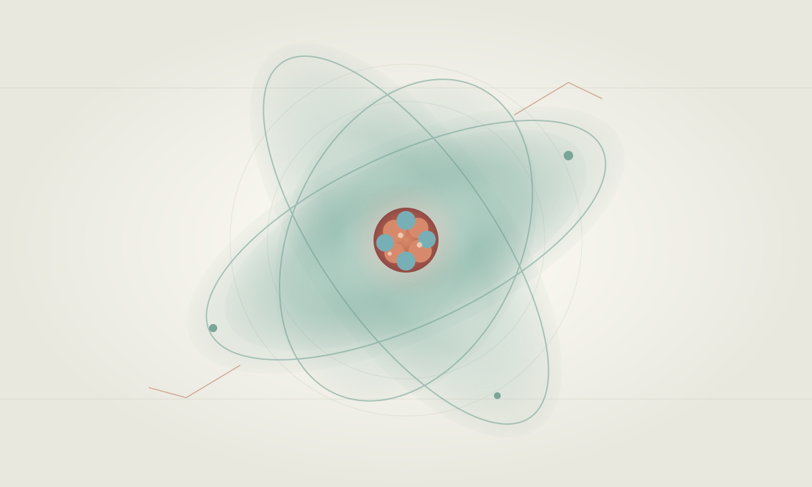

ATLAS OF KNOWLEDGE · ПРЕДМЕТ 02
Химия,
на языке материи.
Изучайте строение вещества, периодические закономерности и химические превращения через наглядные объяснения, модели и эксперименты.

ДВУЯЗЫЧНЫЙ АТЛАС· RU / EN ·АДАПТИВНЫЙ ИНТЕРАКТИВНЫЙ УЧЕБНИК
ЧАСТЬ I
Основы химии
От атома и элемента к периодическим закономерностям и химической связи.
ОТКРЫТЬ ИНТЕРАКТИВНУЮ ПЕРИОДИЧЕСКУЮ ТАБЛИЦУ ↗
ЧАСТЬ II
Вещество и растворы
Как устроены вещества, почему они обладают разными свойствами и как взаимодействуют.
ЧАСТЬ III
Реакции и химия жизни
Химические превращения, органические соединения и роль химии в природе и технологиях.
Атлас химии — второй предмет единого образовательного портала Atlas of Knowledge.